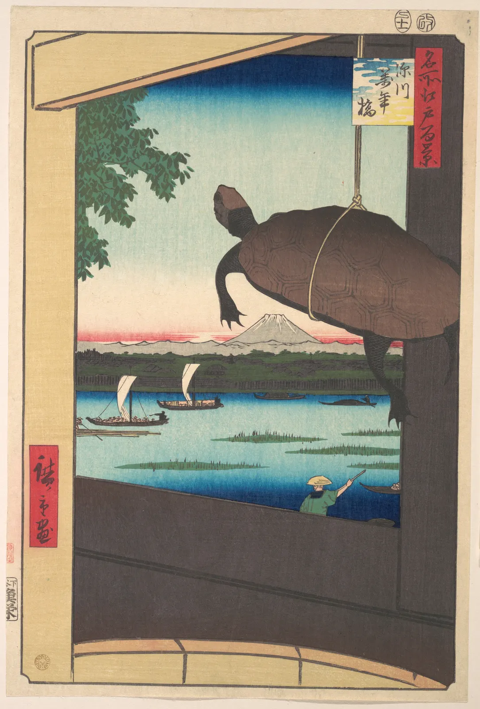

프레임과 자르기
휴대폰으로 잘 찍은 사진 한 장을 올리려는데, 어떤 곳은 정사각형으로, 어떤 곳은 세로로 길게, 어떤 곳은 가로로 납작하게 잘라 달라고 한다. 잘라 놓고 보면 매번 다른 사진이다. 가운데 있던 사람이 가장자리로 밀려나고, 여유 있던 하늘이 사라지고, 발목에서 잘린 사람이 어색하게 서 있다. 그림의 가장자리는 그냥 그림이 끝나는 곳이 아니다. 무엇을 보여 주고 무엇을 버릴지, 화면 안의 것들이 어떤 힘을 받을지 정하는 선이다. 이 장은 그 선을 직접 끌어 본다.
- 화면 비율(1:1, 4:5, 4:3, 3:2, 16:9, 세로 화면)마다 같은 장면에서 담기는 것과 남는 넓이를 계산한다.
- 공공 도메인 명작 위에서 자르기 상자를 끌어, 자르기가 주인공과 이야기를 바꾸는 과정을 본다.
- 가장자리에 가까운 형이 받는 긴장과, 형이 가장자리나 다른 형에 닿을락 말락 하는 접선을 알아보고 고친다.
- 사람을 자를 때 관절에서 자르지 않는 관례와 그 이유, 그리고 그 관례를 일부러 깨는 경우를 구별한다.
- 창틀·문틀 같은 프레임 속 프레임이 시선을 모으는 방식을 익히고, 한 장면을 네 가지 비율로 자르는 규칙을 만든다.
가장자리가 그림을 만든다
그림을 그리기 전에 먼저 정해지는 것이 있다. 종이의 크기와 모양이다. 사진도 마찬가지다. 카메라를 드는 순간, 세상의 끝없는 장면에서 네모 하나를 떼어 낸다. 이렇게 화면의 범위를 정하는 테두리를 프레임(Frame)이라고 한다. 그림 둘레의 나무 액자도 프레임이라 부르지만, 이 장에서 말하는 프레임은 화면이 끝나는 경계 자체다. 이미 있는 그림이나 사진에서 프레임을 다시 정해 일부만 남기는 일은 자르기(Crop, 크롭)라고 한다.
프레임은 무엇을 담을지 정하는 데서 끝나지 않는다. 같은 대상이라도 프레임이 넓으면 대상은 주변 속의 한 부분이 되고, 프레임이 좁으면 대상이 화면의 전부가 된다. 아래 그림은 눈 내린 들판 한 장면에서 세 개의 프레임을 떼어 낸 것이다.
그래서 자르기는 뒷정리가 아니라 구도의 한 단계다. 이 책 앞 장에서 다룬 거의 모든 것이 프레임과 함께 바뀐다. 점이 화면 가운데 있는지 가장자리에 있는지(2장), 형과 바탕의 넓이(3장), 시각적 무게의 균형(7장), 3분할선의 위치(9장), 여백의 양(10장)은 모두 프레임을 기준으로 잰 값이다. 프레임을 옮기면 대상은 그대로여도 이 값들이 전부 달라진다.
화면 비율
프레임의 첫 번째 성질은 가로와 세로의 비, 곧 화면 비율(Aspect ratio)이다. 흔히 "가로:세로"로 적는다. 화면 비율은 대개 작가가 고르기 전에 매체가 정해 둔다. 35 mm 필름 한 칸은 36×24 mm라서 3:2, 예전 텔레비전과 많은 휴대폰 카메라의 기본 화면은 4:3, 요즘 동영상과 모니터는 16:9, A4·A2 같은 국제 표준 종이(ISO 216)는 1:√2(약 1:1.414)다. 영화관의 넓은 화면은 2.39:1 안팎을 많이 쓴다.
| 비율 | 가로÷세로 | 흔히 쓰는 곳 | 4:3 사진에서 가장 크게 자르면 남는 넓이 |
|---|---|---|---|
| 1:1 정사각형 | 1.000 | SNS 목록, 앨범 표지 | 75% |
| 4:5 세로 | 0.800 | SNS 세로 게시물, 인화지 8×10 in | 60% |
| 1:√2 세로(A 판형) | 0.707 | A4·A2 포스터, 책 | 53% |
| 9:16 세로 | 0.563 | 휴대폰 전체 화면, 세로 영상 | 42% |
| 4:3 | 1.333 | 휴대폰 카메라 기본, 예전 TV | 100% |
| 3:2 | 1.500 | 35 mm 필름, 많은 디지털카메라 | 89% |
| 16:9 | 1.778 | 모니터, 동영상, 웹 배너 | 75% |
| 2.39:1 | 2.390 | 영화관 와이드 화면 | 56% |
표의 마지막 칸은 간단한 계산이다. 원본 사진의 비율이 \(R\), 자르려는 비율이 \(r\)이면, 원본 안에 들어가는 가장 큰 \(r\) 비율 사각형은 원본의 가로나 세로 한쪽을 꽉 채우고 다른 쪽을 잘라 낸다. 남는 넓이의 비율은 두 비율 중 작은 것을 큰 것으로 나눈 값이다.
숫자보다 중요한 것은 비율마다 잃는 방향이 다르다는 점이다. 원본보다 넓은 비율은 위아래를, 좁은 비율은 양옆을 버린다. 아래 시뮬레이터의 장면은 서윤이 겨울 수채화 「눈 오는 골목」을 위해 그린 3:2 밑그림이다. 골목은 화면 가운데에서 깊이 들어가고, 양옆에 집이 늘어서 있다. 비율을 바꾸며 골목이 어떻게 달라지는지 본다.
비율을 바꾸면 남는 것
넓은 비율은 시선을 옆으로 흐르게 한다. 지평선, 행렬, 늘어선 집처럼 옆으로 펼쳐진 것에 잘 맞고, 세로로 선 대상은 위아래가 잘려 답답해진다. 좁은 세로 비율은 반대로 서 있는 사람, 나무, 탑, 깊이 들어가는 골목처럼 위아래로 뻗은 것에 맞는다. 정사각형은 어느 쪽으로도 흐르지 않는 비율이라 차분하고 단단해 보이지만, 그만큼 대상을 가운데에 두면 움직임이 사라지기 쉽다. 어느 비율도 그 자체로 좋거나 나쁘지 않다. 무엇을 보여 주려는가에 맞는지가 기준이다.
자르기: 무엇을 버릴 것인가
자르기를 가장 과감하게 쓴 화가로 흔히 에드가 드가(Edgar Degas, 1834–1917)가 꼽힌다. 그의 무용 연습실 그림들은 극장 객석에서 정면으로 본 무대가 아니라 연습실 구석에서 우연히 본 한 순간처럼 짜여 있다. 아래 그림이 그 예다.

드가의 이런 화면은 같은 시대 유럽에 들어온 일본 목판화, 그리고 막 퍼지기 시작한 사진의 영향으로 자주 설명된다. 일본 판화는 인물이나 사물을 화면 가장자리에서 과감하게 잘랐고, 사진은 셔터를 누른 순간 프레임에 걸린 것을 의도와 상관없이 잘라 냈다. 다만 드가가 두 매체 중 어느 쪽에서 얼마나 배웠는지는 연구자마다 강조점이 다르다. 분명한 것은, 그가 "다 보여 주는 화면" 대신 "잘린 화면"을 일부러 골랐다는 점이다.
아래 시뮬레이터에서 직접 잘라 본다. 상자 안쪽을 끌면 옮겨지고, 네 귀퉁이의 손잡이를 끌면 크기가 바뀐다. 오른쪽(좁은 화면에서는 아래)에 잘라 낸 결과가 바로 보인다.
명작 위의 자르기 상자
잘라 보면 두 가지를 알게 된다. 첫째, 자르기는 주인공을 바꾼다. 전체 화면에서는 "연습실"이 주인공이었는데, 두 사람만 남기면 관계가, 발만 남기면 동작이 주인공이 된다. 둘째, 자르기는 맥락을 지운다. 무용수가 왜 등을 긁는지, 교사가 누구를 보는지 알려 주던 주변이 사라지면, 남은 부분은 다른 뜻으로 읽힐 수 있다. 보도 사진에서 자르기가 윤리의 문제가 되는 이유도 여기에 있다. 같은 사진도 어디서 자르느냐에 따라 사건의 뜻이 달라질 수 있다.
가장자리의 긴장과 접선
프레임의 가장자리는 화면 안의 것들을 끌어당긴다. 화면 한가운데 놓인 귤은 조용히 놓여 있지만, 같은 귤을 오른쪽 가장자리 가까이 옮기면 곧 화면 밖으로 굴러 나갈 것처럼 보인다. 미술 심리학자 루돌프 아른하임(Rudolf Arnheim, 1904–2007)은 『미술과 시지각』(Art and Visual Perception, 1954)에서 빈 사각형 안에도 눈에 보이지 않는 힘의 구조가 있다고 설명했다. 중심과 두 대각선, 가로·세로 중심축, 그리고 네 변이 그 구조의 뼈대이고, 화면 안의 형은 이 뼈대와의 관계에 따라 안정되거나 긴장한다는 것이다. 이것은 실험으로 측정한 법칙이라기보다 화가들의 경험을 정리한 이론에 가깝지만, 가장자리 근처의 형이 불안해 보인다는 경험과는 잘 맞는다.
가장자리에 가까울수록 긴장이 커지다가, 형이 가장자리에 닿을락 말락 하는 지점에서 가장 거슬리는 일이 생긴다. 형의 윤곽과 프레임의 선이 한 점에서 스치면, 눈은 그 점에 붙어 떨어지지 않는다. 형이 프레임에 기대어 있는지, 잘린 것인지, 그냥 우연히 닿은 것인지 알 수 없기 때문이다. 이렇게 두 윤곽이 서로 스치듯 닿는 상태를 접선(Tangent)이라고 부른다. 수학의 접선에서 빌려 온 말로, 그림 수업과 만화 작법에서 흔히 "피해야 할 접선"이라고 가르친다.
아래에서 귤 두 개를 직접 옮겨 본다. 프레임 안에서 귤이 가장자리, 그리고 서로와 어떤 관계에 있는지 이름을 붙여 준다.
가장자리로 다가가는 귤
"확실히 떼거나, 확실히 자르거나"라는 처방은 가장자리뿐 아니라 화면 안의 모든 윤곽에 적용된다. 정물에서 컵의 손잡이가 뒤의 병 윤곽에 딱 붙거나, 풍경에서 먼 산등성이가 가까운 지붕선과 겹쳐 한 줄로 이어지면 앞뒤 깊이가 사라진다(6장). 사진에서는 배경의 전봇대가 사람의 머리 위로 "자라나는" 경우가 유명하다. 이런 것들은 찍거나 그릴 때 반 걸음 옮기는 것으로 대개 고칠 수 있다.
사람을 자를 때
사람이 들어간 화면은 가장자리 문제가 더 예민하다. 몸은 누구나 잘 아는 형이라서 어디가 잘렸는지 바로 알아챈다. 사진과 초상화에서 오래 쓰여 온 관례가 하나 있다. 관절에서 자르지 않는다. 발목, 무릎, 손목, 팔꿈치, 목에서 프레임이 끝나면 몸이 그 자리에서 "끊긴" 것처럼 보이기 쉽다. 대신 정강이 중간, 허벅지 중간, 가슴 중간처럼 뼈의 한가운데에서 자르면 몸이 화면 밖으로 이어진다고 느낀다.
이 관례는 실험으로 확인된 법칙이 아니라 사진가, 영화 촬영 감독, 초상화가들이 경험으로 다듬어 온 요령이다. 영화와 방송에서 쓰는 화면 크기의 이름(전신, 무릎 위, 허리 위, 가슴 위, 얼굴 가득)이 관절을 피한 자리에 붙어 있는 것도 같은 이유다. 아래에서 프레임의 위아래 변을 끌어 사람을 잘라 본다. 사람은 미술 해부학에서 흔히 쓰는 8등신 비례(머리 길이의 8배가 키)로 그렸다.
어디서 자를까
관례를 알면 그것을 깨는 것도 선택이 된다. 극단적인 클로즈업에서는 이마와 턱을 함께 잘라 눈과 입만 남기는 화면을 일부러 쓰고, 패션 사진에서는 얼굴을 빼고 옷과 손만 남겨 사람보다 물건을 주인공으로 만든다. 드가의 「무용 수업」 왼쪽 가장자리 인물들처럼, 잘린 몸은 "화면 밖에도 사람이 있다"는 신호가 되기도 한다. 문제는 자른 것이 아니라 어정쩡하게 자른 것이다. 관절에서, 손가락 끝에서, 발끝에서 몇 화소만 걸린 자르기는 의도가 아니라 실수로 읽힌다.
프레임 속 프레임
프레임은 화면의 바깥 테두리에만 있지 않다. 창틀, 문틀, 거울, 아치, 나뭇가지 사이의 틈처럼 화면 안에 있는 사각형이나 테두리가 또 하나의 프레임 노릇을 할 수 있다. 이것을 프레임 속 프레임(Frame within a frame)이라고 한다. 안쪽 프레임은 세 가지 일을 한다. 시선을 그 안으로 모으고, 앞(틀)과 뒤(틀 너머)라는 깊이의 켜를 만들고, 보는 사람을 "틀 이쪽에서 들여다보는 사람"의 자리에 세운다.

히로시게는 『명소 에도 백경』(One Hundred Famous Views of Edo, 1856–58) 연작의 여러 장에서 이런 화면을 썼다. 화면 앞쪽에 커다란 사물(나뭇가지, 기둥, 새, 등롱)을 가장자리에서 잘린 채 크게 두고, 그 사이로 먼 풍경을 작게 보여 준다. 반 고흐가 이 연작의 몇 장을 유화로 베껴 그린 것은 잘 알려져 있다. 앞에서 본 드가의 거울도 같은 장치다. 사진과 영화에서도 문틀과 창틀은 가장 흔한 안쪽 프레임이다.
아래 비교 그림은 서윤이 찍은 책방 E 쇼윈도 장면을 두 가지로 자른 것이다. 왼쪽은 창 안쪽만, 오른쪽은 창틀까지 넣었다. 경계선을 끌어 비교한다.
창 안쪽만 자르면 진열이 화면을 꽉 채워 물건 하나하나가 크게 보인다. 창틀까지 넣으면 진열이 짙은 틀 안에 들어가 하나의 덩어리로 읽히고, 보는 사람은 길에서 창을 들여다보는 자리에 선다.
안쪽 프레임도 많을수록 좋은 것은 아니다. 틀이 너무 두꺼우면 화면 대부분이 틀이 되어 답답해지고, 안쪽 프레임이 바깥 프레임과 거의 겹치면 있으나 마나 한 테두리가 된다. 안쪽 프레임의 변이 바깥 프레임의 변에 닿을락 말락 하면 앞 절의 접선 문제가 그대로 생긴다. 아래에서 문틀을 옮기고 크기를 바꿔 본다.
문틀 너머의 골목
안쪽 프레임이 잘 일하는 조건을 정리하면, 틀 안이 바깥보다 밝거나 선명해 명도 대비가 있고(ColorBook 6장), 틀 너머에 볼 것이 분명하며, 틀의 변이 바깥 프레임과 확실히 떨어져 있거나 확실히 잘려 있을 때다. 쇼윈도는 그 자체로 거리에서 보는 사람에게 프레임 속 프레임이다. 창틀은 진열을 감싸는 액자이고, 사람은 그 앞에 멈춰 서서 들여다본다.
그림과 사진, 화면의 프레임
프레임을 다루는 태도는 매체와 사람마다 크게 다르다. 사진가 앙리 카르티에브레송(Henri Cartier-Bresson, 1908–2004)은 구도가 셔터를 누르는 순간 뷰파인더 안에서 완성되어야 한다고 보고, 나중에 사진을 잘라 고치는 것을 대체로 꺼린 것으로 알려져 있다. 그의 인화에 필름 테두리를 함께 남긴 경우가 많다는 이야기도 이런 태도와 함께 전해진다. 반대로 잡지와 신문의 편집자들은 사진을 지면에 맞춰 자르는 것을 일상적으로 했다. 두 태도는 맞고 틀림의 문제가 아니라, 프레임을 정하는 순간을 언제로 보느냐의 차이다.
영화는 화면 비율 자체가 역사를 가진다. 1930년대 유성 영화는 1.37:1에 가까운 화면을 표준으로 썼고, 1950년대에 텔레비전과 경쟁하면서 훨씬 넓은 화면들이 등장했다. 넓은 화면은 풍경과 군중을 담기 좋은 대신, 두 사람의 대화를 가까이 잡으면 양옆이 비어 버린다. 감독들은 그 빈 옆자리에 다른 인물이나 창, 문을 놓아 화면을 채우는 법을 익혔다. 요즘은 같은 영상을 가로 화면과 세로 휴대폰 화면 모두에 내보내야 하는 일이 많아, 촬영할 때부터 두 비율 모두에서 주인공이 잘리지 않을 안전 영역을 정해 두기도 한다.
그림은 사진과 달리 프레임을 먼저 정하고 시작하는 경우가 많다. 캔버스는 규격품이 많아서 화가는 장면을 캔버스 비율에 맞춰 짠다. 한국의 병풍은 여러 폭이 이어진 넓은 화면이면서 동시에 폭마다 나뉜 작은 화면이기도 해서, 한 폭씩 볼 때와 펼쳐 놓고 볼 때 다른 구도로 읽힌다. 책의 펼침면도 비슷하다. 가운데 접히는 선이 화면을 둘로 나누는 안쪽 프레임이 되므로, 중요한 얼굴이나 글자를 그 선 위에 두지 않는다.
한 장면, 네 개의 프레임
이 장의 도구를 한데 모은다. 아래는 서윤이 책방 E 겨울 쇼윈도를 휴대폰으로 찍은 4:3 사진(4,032×3,024 화소)을 이 책이 다시 그린 것이다. 위에는 가게 간판, 가운데에는 짙은 창틀 안의 진열(뒤쪽 책장, 가운데 표지를 보이게 세운 책들과 빨간 표지 한 권, 귤 그릇, 작은 등), 왼쪽에는 지나가는 손님, 오른쪽에는 출입문이 있다. 이 한 장을 웹 배너(16:9), SNS 정사각형(1:1), SNS 세로(4:5), A2 포스터(1:√2 세로)로 잘라야 한다. 위의 버튼으로 자를 비율을 고르고, 사진 위에서 그 상자를 끌어 옮기고, 슬라이더로 크기를 바꾼다. 아래 칸에 네 결과가 나란히 보인다.
쇼윈도 사진을 네 비율로
네 비율을 함께 놓아 보면, 한 장면을 여러 비율로 쓴다는 것은 "같은 사진을 네 번 자른다"가 아니라 "네 장의 다른 그림을 고른다"에 가깝다는 것을 알게 된다. 넓은 웹 화면은 창 전체를 프레임 속 프레임으로 남길 수 있지만 간판과 창을 함께 담기 어렵다. 정사각형과 4:5는 창 전체를 담으려면 양옆에 손님과 문이 걸리고, 창 안으로 들어가면 창틀을 잃는 대신 물건이 커진다. 세로 포스터는 화소가 가장 많이 줄어든다. 각 선택에는 대가가 있고, 그 대가를 알고 고르는 것이 이 장의 목표다.
서윤의 작업 노트
한 장의 쇼윈도 사진, 네 장의 그림
진열을 세 켜(6장)와 박자(8장)로 정리한 뒤, 서윤은 해 질 무렵 길 건너편에서 쇼윈도를 휴대폰으로 찍었다. 4:3, 4,032×3,024 화소. 주인은 이 사진을 웹사이트 첫 화면, SNS 정사각형과 세로 게시물, 그리고 연말 낭독회 포스터에 모두 쓰고 싶어 했다. 서윤은 처음에 네 비율을 모두 사진 가운데에서 잘랐다. 웹 배너는 간판이 빠지면서 간판의 아래 끝선만 화면 위 가장자리에 아슬아슬하게 걸렸고, 정사각형은 지나가던 손님의 등 한 조각이 왼쪽 끝에 가늘게 남고 문틀 선이 오른쪽 가장자리와 겹쳤고, 포스터는 작은 등이 오른쪽 끝에서 어중간하게 잘렸다.
도경은 L자 종이 두 장을 사진 출력물 위에 대 보며 말했다. "가운데에서 자르는 건 자른 게 아니야. 버릴 걸 고르지 않은 거지." 두 사람은 이 장의 계산부터 했다. 4:3 사진에서 가장 크게 자르면 16:9와 1:1은 넓이의 75%, 4:5는 60%, A2 세로(1:√2)는 53%가 남는다. 16:9의 높이는 사진 높이의 75%인데, 간판 위 끝부터 창턱 아래 끝까지 여유를 두고 담으려면 81% 이상이 필요했다. 16:9로는 둘 다 가질 수 없다는 뜻이었다.
서윤은 비율마다 무엇을 남길지 하나씩 정했다. 웹 16:9는 간판을 버리고 창 전체를 남겨 짙은 창틀을 프레임 속 프레임으로 쓴다. 정사각형과 4:5는 창틀 안으로 들어가 빨간 표지의 책과 작은 등만 남긴다. 포스터는 간판과 진열 가운데를 남기고 창틀 양옆을 버린다. 그리고 모든 비율에 같은 점검을 했다. 주인공(빨간 표지)은 온전히, 가장자리와 닿을락 말락 한 물건이나 선은 없게, 지나가는 손님은 완전히 빼거나 관절이 아닌 곳에서 자른다.
| 비율 | 자른 범위(사진 폭·높이에 대한 비율) | 화소 | 남긴 것 · 버린 것 |
|---|---|---|---|
| 웹 16:9 | 가로 0~1, 세로 0.135~0.885 | 4,032×2,268 | 창 전체(창틀이 안쪽 프레임) · 간판 버림, 손님은 정강이 아래에서 잘림 |
| SNS 1:1 | 가로 0.42~0.795, 세로 0.20~0.70 | 1,512×1,512 | 빨간 표지 책과 등 · 창틀, 간판, 손님, 귤 그릇 버림 |
| SNS 4:5 | 가로 0.455~0.791, 세로 0.185~0.745 | 1,355×1,693 | 빨간 표지 책과 등, 위아래 여유 · 창틀 버림 |
| 포스터 A2 | 가로 0.26~0.79, 세로 0~1 | 2,138×3,024 | 간판, 진열 가운데, 귤 그릇 · 창틀 양옆, 손님, 문 버림 |
마지막 줄에서 문제가 하나 남았다. 포스터용으로 자른 2,138 화소를 A2 가로 420 mm에 펼치면 약 129 ppi다. 멀리서 보는 포스터에 흔히 쓰는 150 ppi 안팎에도 못 미친다. 서윤은 포스터용 사진은 자르지 않고 같은 자리에서 휴대폰을 세워 다시 찍기로 했다. 세로 4:3(3,024×4,032)에서 A2 비율로 자르면 2,851×4,032 화소, A2에서 약 172 ppi가 된다. 도경은 "결국 제일 좁은 화면은 처음부터 그 화면으로 찍는 거네"라며 자기 스케치북 첫 장에 연필로 그어 둔 여러 비율의 네모를 보여 주었다.
핵심 정리
- 프레임은 화면의 범위를 정하는 경계이고, 자르기는 그 경계를 다시 정하는 일이다. 프레임이 바뀌면 대상은 그대로여도 주인공, 균형, 여백, 이야기가 함께 바뀐다.
- 화면 비율은 담을 수 있는 것과 잃는 방향을 정한다. 원본 비율 \(R\)에서 비율 \(r\)로 가장 크게 자르면 넓이의 \(\min(r,R)/\max(r,R)\)이 남는다. 넓은 비율은 위아래를, 좁은 비율은 양옆을 버린다.
- 가장자리에 가까운 형은 긴장을 받고, 가장자리나 다른 형에 닿을락 말락 하면 눈이 그 점에 걸린다(접선). 처방은 확실히 떼거나 확실히 겹치거나 자르는 것이다.
- 사람은 관절(목, 팔꿈치, 손목, 무릎, 발목)이 아니라 뼈의 중간에서 자르는 것이 관례다. 관례를 깨는 자르기는 의도가 분명할 때 힘이 있다.
- 창틀, 문틀, 거울 같은 프레임 속 프레임은 시선을 모으고 깊이의 켜를 만든다. 틀이 너무 두껍거나 바깥 프레임과 닿으면 효과가 사라진다.
- 자르면 화소도 줄어든다. 여러 비율로 쓸 장면은 넉넉히 찍고 가장 좁은 비율부터 정하며, 크게 인쇄할 비율은 처음부터 그 비율로 찍는다.
확인 퀴즈
1. 4,032×3,024 화소(4:3)의 사진을 넓이를 최대한 살려 4:5 세로로 자르려 한다. 남는 넓이의 비율과 잃는 방향으로 맞는 것은?
2. 정물 사진에서 귤 하나의 윤곽이 화면 오른쪽 가장자리에 닿을락 말락 걸려 있다. 이 장의 처방으로 가장 알맞은 것은?
3. 서 있는 사람의 인물 사진을 세로로 자르려 한다. 사진과 초상화에서 흔히 따르는 관례에 가장 가까운 아래 변의 위치는?
4. 히로시게의 「후카가와 만넨바시」에서 다리의 기둥과 난간, 들통 손잡이가 화면 안에 사각형을 만든다. 이런 프레임 속 프레임이 하는 일로 이 장의 설명과 거리가 먼 것은?